译自官方论坛补丁帖：Patch Notes of August 11, 2026（作者 Luthius）
说明：本译文尽量保留原文结构与数值；专有名词首次出现标注英文（如 宝典 Codex），便于对照。
一、生物伤害抗性 Creature Damage Resistance
- 生物（不含随从 Followers、玩家船员 Player Ship Crewmembers、战斗训练师 Battle Trainers）现在会获得少量伤害抗性 Damage Resistance，数值因生物而异，但主要基于其难度值 Difficulty Value 缩放。
- 生物伤害抗性的处理方式与玩家伤害抗性类似，作用于所有伤害类型（近战、法术、毒、陷阱等）。
二、宝典配置方案 Codex Loadouts
- 技能宝典 Skill Codexes 现在新增「配置方案 Loadouts」区块，玩家可为宝典升级选择创建多个配置方案。
- 注意：武器/盾牌宝典没有配置方案，因为玩家在这些宝典内可自由无限制地切换姿态 Stances / 终结技 Finishers。
- 每个技能宝典最多可拥有 25 个配置方案。
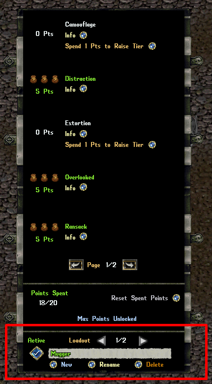
激活的配置方案 Active Loadout
未激活的配置方案 Inactive Loadouts
- 「未激活」 的配置方案以灰色文字显示。
- 玩家可对未激活配置方案使用重置已分配点数，且无任何冷却或限制。
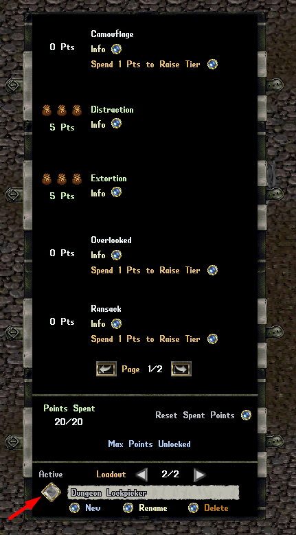
三、召唤之书 Summoner's Tome
- 召唤之书不再有「总览页 Overview Page」，玩家现在可点击中间区域的各召唤类型按钮来选择它们。
- 召唤之书的每个配置方案会存储其所有召唤类型的升级选择（而非每种召唤类型各一个单独方案）。
- 宝典中显示的「下一阶段进度 Next Point Progress」代表当前所选召唤类型的当前经验进度。
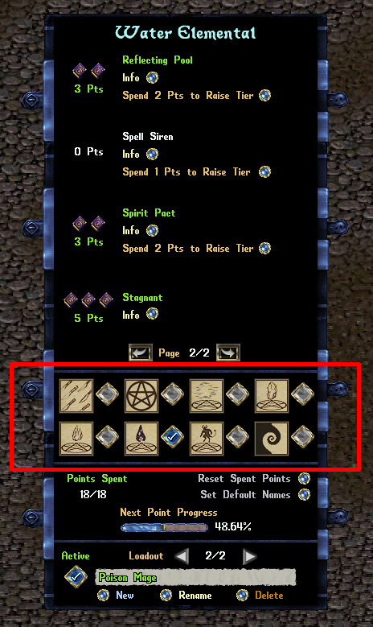
四、驯兽图鉴 Taming Bestiary
- 驯兽图鉴不再有「总览页」，玩家当前所选生物类别 Creature Class（攻击 Attack、功能 Utility、坦克 Tank）所属的随从列表现在显示在宝典中央。
- 每个生物类别图标旁的 「x」 数字显示玩家当前正在控制、且属于该生物类别的随从数量。
- 驯兽图鉴的每个配置方案会存储其所有生物类别的升级选择（而非每个类别各一个方案）。
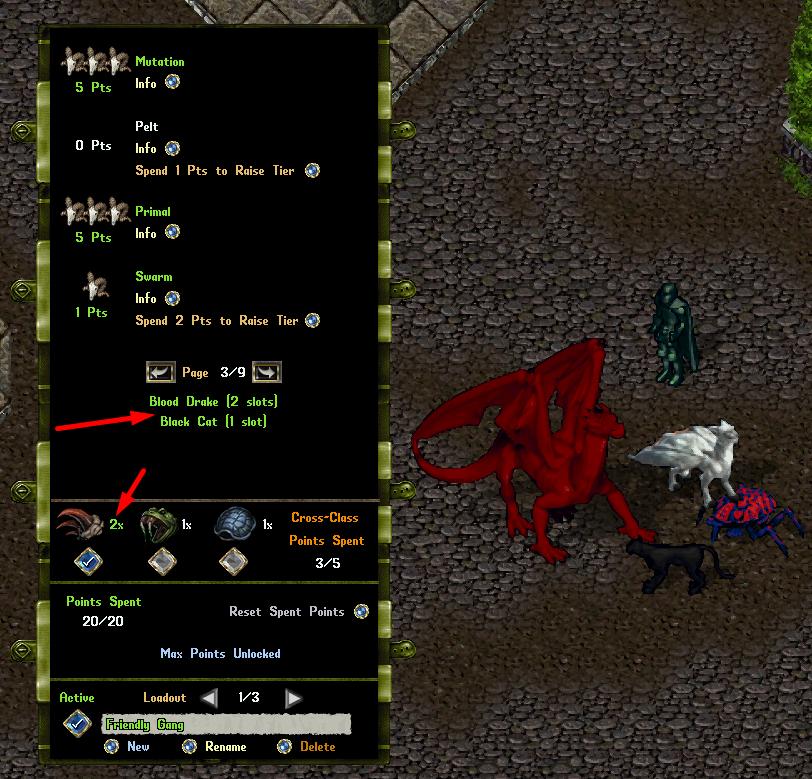
五、毒 Poison
玩家对生物伤害数值 Player vs Creatures Damage Values
玩家施加于生物的毒，其每跳伤害 Tick Damage 现在变化如下：
- 次级毒 Lesser Poison： 4–6 伤害
- 普通毒 Regular Poison： 8–12 伤害
- 强化毒 Greater Poison： 12–18 伤害
- 致命毒 Deadly Poison： 16–24 伤害
- 灭杀毒 Lethal Poison： 20–30 伤害
玩家对生物伤害处理 Player vs Creatures Damage Handling
- 玩家对生物毒伤的基础加成系数提升至 200%（原为 50%）。
- 辨毒 Taste ID 技能现在为对生物的毒伤提供 (200% × (有效辨毒技能 / 100)) 的加成（原为 100%）。
- 毒伤每跳的伤害加成现在以加法方式合并（与新近战、法术、陷阱伤害的处理方式一致），而非乘法。
若满足以下任一条件，对生物（NPC）的任意毒伤每跳会被降至 1：
- 来源距离超过 18 格 tiles
- 来源已不再存活（或是处于离线状态的玩家）
- 来源是已潜行 Hidden 达 15 秒或更久的玩家
同时毒中多只生物 Having Multiple Creatures Poisoned
- 若玩家毒中了超过 1 只生物，玩家对生物结算的每次毒跳伤害将承受 ((中毒生物总数 − 1) × 10%) 的惩罚，最高惩罚 70%。
多段毒跳 Multiple Ticks
- 任何会导致多段毒跳同时发生的机制（毒击 Poison Strike、毒元素护甲 Poison Aspect Armor 等），现在会分别显示每次毒跳的伤害，而非合并显示数字。
近战毒刺 Melee Poison Sting
- 当玩家用已对目标施加同种毒的毒武器进行近战命中时，有一定几率对目标结算一次毒刺 Poison Sting，立即结算 1 次毒跳。
- 毒刺触发几率基于玩家有效用毒技能 Effective Poisoning Skill 与有效炼金技能 Effective Alchemy Skill 的总和。
- 触发几率 = (35% × (有效技能总和 / 100))，并进一步按武器速度缩放。
- 玩家默认最多每 5 秒 触发一次毒刺（近战或法术）。
法术毒刺 Spell Poison Sting
- 法术毒刺现在也镜像近战毒刺：
- 当玩家对已施加同种毒的生物施放毒咒 Poison Spell 时，有一定几率结算一次毒刺，立即结算 1 次毒跳。
- 触发几率基于有效用毒 + 有效炼金技能总和。
- 触发几率 = (35% × (有效技能总和 / 100))。
- 玩家默认最多每 5 秒 触发一次（近战或法术）。
毒药工具升级 Poison Kit Upgrades
毒药工具升级描述更新如下：
- 气劲 Airborne： 减少「同时持有多种毒效果」带来的伤害惩罚（10% / 30% / 50%）；同时结算多段毒跳时减益幅度减半。
- 腐蚀 Caustic [原名为 Terminal]： 提升毒刺几率（4% / 12% / 20%），并减少毒刺冷却（0.4 / 1.2 / 2.0）秒。
- 瞄准毒液 Targeted Venom： 若玩家仅毒中 1 只生物，提升每跳伤害（40% / 120% / 200%）；同时结算多段毒跳时加成幅度减半。
毒药工具升级重置 Poison Kit Upgrades Reset
- 玩家现在在毒药工具菜单中每 5 分钟才能重置一次毒升级（不再检查是否有激活的毒效果）。
生物身上的毒效果 Poison Effects on Creatures
- 生物（NPC、驯服、召唤）现在可同时拥有多种不同类型的毒效果（例如 1 个强化毒 + 2 个致命毒 + 2 个灭杀毒同时生效）。
- 但同一种来源在单一生物身上只能有 1 个毒效果（即 1 名玩家/生物不能在同一生物身上叠加多个/不同毒效果）。
示例
一名拥有用毒技能的玩家，带着一只驯服的沼泽蜘蛛 Swamp Spider 和一只驯服的翼龙 Wyvern，共同对抗一只恶魔 Daemon。
玩家施放毒咒，对恶魔施加灭杀毒。
玩家的翼龙命中恶魔，也施加了灭杀毒。
玩家的沼泽蜘蛛命中恶魔，施加了强化毒。
恶魔现在身上有 2 个灭杀毒效果 + 1 个强化毒效果，全部在造成伤害。
生物对生物毒跳 Creature vs Creature Poison Ticks
- 生物对其他生物的毒效果，现在固定每 5 秒跳一次（无论毒类型）。
- 生物对其他生物的毒效果，每跳伤害为来源生物最大伤害 Damage Max 的百分比，按毒类型缩放（每种各有每跳最低伤害）。
生物对生物每跳毒伤如下：
- 次级毒： (最大伤害) × 20% [最低 5 伤害]
- 普通毒： (最大伤害) × 30% [最低 10 伤害]
- 强化毒： (最大伤害) × 40% [最低 15 伤害]
- 致命毒： (最大伤害) × 50% [最低 20 伤害]
- 灭杀毒： (最大伤害) × 60% [最低 25 伤害]
示例 1
玩家有一只 15 级翼龙（近战伤害 50–60），可施加灭杀毒。
该翼龙的毒跳对生物造成 (60 × 60%) = 36 伤害/跳。
示例 2
玩家有一只 15 级神盾蝰 Aegis Asp（近战伤害 15–18），可施加致命毒。
该神盾蝰的毒跳对生物造成 (18 × 50%) = 9 伤害/跳，按致命毒最低值变为 20 伤害/跳。
治疗随从 Curing Followers
- 若玩家的召唤/驯服随从身上同时有多种毒类型，用法术或绷带/兽医用品治疗该随从的难度取决于其身上最强的毒类型（次级 < 普通 < 强化 < 致命 < 灭杀）。
- 成功治愈随从会移除其身上所有毒效果，包括低于最强类型的那些。
死灵法术 Necromancy
- 毒击 Poison Strike 能力描述更新为：「对一只你已施加毒或疾病的生物施放，结算最多 3 次毒跳与最多 8 次疾病跳剩余量，按 (100% × (死灵法术 / 100)) 标准伤害。」
- 心智腐蚀 Mind Rot 能力描述更新为：「接下来 30 秒内，玩家的毒与疾病每跳伤害提升 (20% × (死灵法术 / 100))。」
注意事项 Notes
- 毒击 与 心智腐蚀 现在会作用于玩家直接施加的任何形式的毒或疾病，包括近战来源。
- 玩家不再收到「你以心智腐蚀强化了毒」的提示，因为该能力现在会影响玩家已有的毒/疾病每跳。
六、细剑宝典 Fencing Codex
- 暗杀 Assassinate 终结技描述更新为：「造成 400% 伤害，并立即结算目标身上 1 次疾病跳与 1 次毒跳剩余量（仅结算由玩家施加的效果）。」
七、陷阱宝典 Trap Codex
- 地基 Groundwork 升级描述更新为：「提升伤害 (6% / 18% / 30%)，但放置陷阱所需时间增加 (0.25 / 0.75 / 1.25) 秒；玩家在放置陷阱期间获得伤害减免 (4% / 12% / 20%) 与击退免疫 (20% / 60% / 100%)。」
八、格挡宝典 Parry Codex
- 屏障 Barrier 终结技描述更新为：「伤害每级平减 0.6（伤害不可低于 1）。」
九、魔法抗性下限 Magic Resist Minimums
- 生物的法术抗性现在最多可被降低 150（原为 100）。
十、精通链链接 Mastery Chain Links
毒链接 Poison Links
毒伤害 Poison Damage 链接加成更新：
- 青铜 Bronze： 7.0%（原 5%）
- 白银 Silver： 8.75%（原 6.25%）
- 黄金 Gold： 10.5%（原 7.5%）
- 腐化 Corrupted： 11.375%（原 8.125%）
毒伤害/抗性无视 Poison Damage/Resist Ignore 链接加成更新：
- 青铜： 4.5%（原 4%）
- 白银： 5.625%（原 5%）
- 黄金： 6.75%（原 6%）
- 腐化： 7.3125%（原 6.5%）
可选链接转换 Optional Link Conversion
以下链接类型现在可选择转换为「玩家造成伤害 Damage Dealt by Player」类型链接：
- 有效用毒 Effective Poisoning
- 毒伤害 Poison Damage
- 毒伤害/抗性无视 Poison Damage / Resist Ignore
注意：玩家可通过双击链接并使用链接转换菜单 Link Conversion menu 进行可选转换。
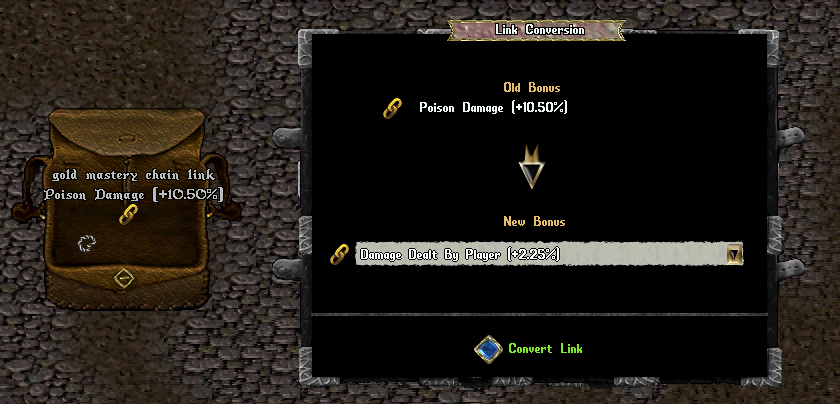
对威慑生物伤害 Damage to Barded Creatures
- 对威慑生物伤害 链接现在仅当玩家自身对目标有激活的威慑效果 Barding Effect（失谐 Discordance、安抚 Peacemaking、挑衅 Provocation）时才提供加成。
对中毒生物伤害 Damage to Poisoned Creatures
- 对中毒生物伤害 链接现在仅当玩家或其某只随从对目标有激活的毒效果（强化毒及以上）时才提供加成。
对染疾生物伤害 Damage to Diseased Creatures
- 对染疾生物伤害 链接现在仅当玩家或其某只随从对目标有激活的疾病效果时才提供加成。
对流血生物伤害 Damage to Bleeding Creatures
- 对流血生物伤害 链接现在仅当玩家或其某只随从对目标有激活的流血效果时才提供加成。
十一、元素 Aspects
波涛护甲加成 Agorawave Armor Bonuses
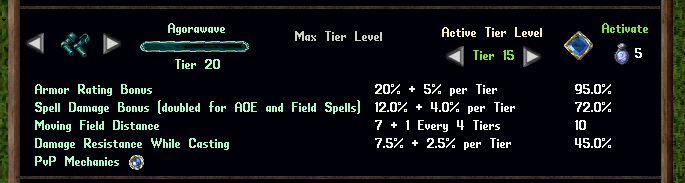
法术伤害加成（AOE 与领域法术翻倍）Spell Damage Bonus (doubled for AOE and Field Spells)
- 法术伤害提升 (12% + (4% × 阶位等级 Tier Level)) 标准值。
- 此加成对任意 AoE 法术（包括流星雨 Meteor Swarm、连锁闪电 Chain Lightning、地震 Earthquake）以及任意移动领域（包括火领域 Fire Field、毒领域 Poison Field、麻痹领域 Paralyze Field）翻倍。
移动领域距离 [无变化] Moving Field Distance [NO CHANGE]
- 由火领域、毒领域、麻痹领域法术创造的移动领域行进距离为 (7 + (每 4 阶 +1))。
施法期间伤害减免 [无变化] Damage Resistance While Casting [NO CHANGE]
- 玩家在施法动作期间（动画播放时）获得 (7.5% + (2.5% × 阶位等级)) 的伤害减免加成。
时之护甲加成 Temporal Armor Bonuses
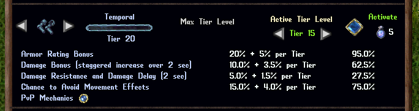
伤害加成（2 秒内阶梯式增长）Damage Bonus (staggered increase over 2 sec)
- 当玩家处于自己创造的时之领域 Temporal Field 12 格以内时，获得所有造成伤害 (10% + (3.5% × 阶位等级)) 的加成。
- 此加成在时之领域刚创造时为 0%，之后每秒提升 50% 标准值，直到 2 秒后达到 100% 标准值并维持到时之领域结束。
伤害减免与伤害延迟 Damage Resistance and Damage Delay
- 当玩家处于自己创造的时之领域 12 格以内时，获得 (5% + (1.5% × 阶位等级)) 的伤害减免加成与伤害延迟效果。
- 伤害延迟效果会将玩家所受最终伤害（结算减伤后）按效果量（向下取整）减少，并在 2 秒后将该减少量作为对玩家的伤害结算。
回避移动效果几率 Chance to Avoid Movement Effects
- 当玩家处于自己创造的时之领域 12 格以内时，有 (15% × (4.0% × 阶位等级)) 的几率忽略任何使玩家麻痹、定身或缠绕的效果。
- 注意：此加成原先归属于空气元素护甲 Air Aspect Armor，现归入时之元素护甲 Temporal Aspect Armor。
十二、驯兽 Taming
逆袭加成 Underdog Bonuses
- 驯服随从现在获得摔跤 Wrestling 的逆袭加成，最高 +20%（基于生物所需最低驯兽技能与 120 的差距缩放）。
- 摔跤逆袭加成是一个标量加成，应用于攻击与防御双方，但在任何 accuracy（命中）或 defense（防御）加成之前应用，也在任何上限（如 PvP 上限或防御时最高 100 摔跤技能）之前应用。
- 注意：随从的摔跤逆袭加成不会调整动物学 Animal Lore 主页面上显示的摔跤技能，只会在「详情 Details」区的「逆袭加成 Underdog Bonuses」中显示。
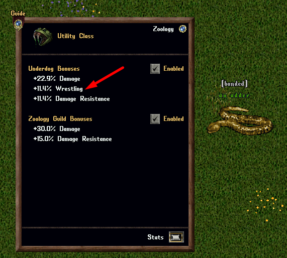
动物学 Zoology
- 动物学菜单现在新增「马厩中 Stabled」列，显示玩家当前马厩中的每种生物数量。
- 「显示所有生物 Show All Creatures」排序模式现显示为「按动物学加成排序 Sort By Zoology Bonus」。
- 玩家现在可排序「仅显示马厩中 Show Only Stabled」，只看自己有 1 只或以上处于马厩中的生物类型。
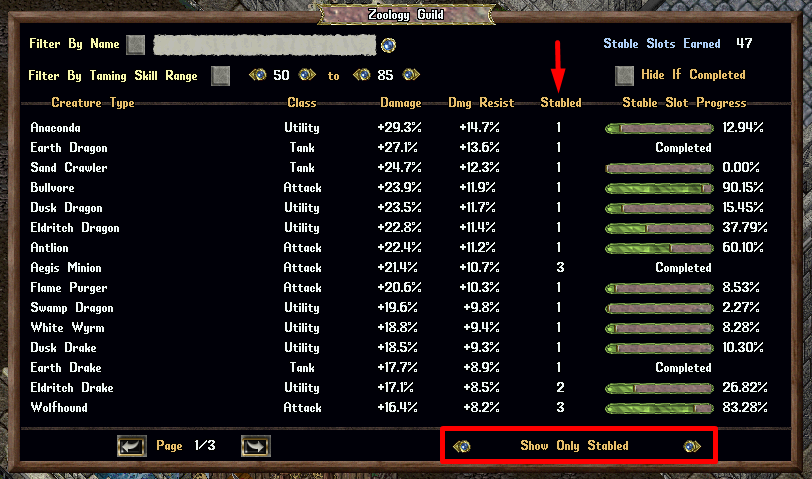
十三、攻击类升级 Attack Class Upgrades
新增升级 New Upgrades
- 屠巨者 Giant Killer： 近战命中提升 (2% / 6% / 10%)；若加成后命中几率仍低于 66%，对目标加成翻倍。
- 深呼吸 Heavy Breathing： 可命中多目标的被动与冷却能力造成的伤害提升 (15% / 45% / 75%)。若随从没有可命中多目标的冷却能力，随从伤害提升 (5% / 15% / 25%)。
已有攻击类升级描述更新如下：
- 伏击 Ambush： 退出潜行后 10 秒内（含背刺），随从伤害提升 (7% / 21% / 35%)，伤害减免 (4% / 12% / 20%)。若随从无潜行能力，随从伤害提升 (5% / 15% / 25%)。
- 困兽 Cornered： 若随从 10 秒内受过其他生物伤害，随从伤害提升 (7% / 21% / 35%)。若 10 秒内未受过伤，随从伤害提升 (4% / 20% / 25%)。
- 进食 Feed： 若随从对目标有流血效果，随从伤害提升 (5% / 15% / 25%)，且在目标 2 格内的近战攻击恢复最大生命 (0.5% / 1.5% / 2.5%)。若目标无法施加流血，随从伤害提升 (5% / 15% / 25%)。
- 狂暴 Feral： 狂乱或暴怒期间，每 15 秒随从首次非背刺近战攻击伤害提升 (60% / 180% / 300%)。若随从没有这两种能力，随从伤害提升 (5% / 15% / 25%)。
- 狩猎队 Hunting Party： 若随从与驯兽师均在目标 2 格内，随从伤害提升 (7% / 21% / 35%)。若任一方超过 2 格，随从伤害提升 (4% / 12% / 20%)。
- 焚身 Immolate： 火焰 strike 与法术灼烧 Spellburn 能力伤害提升 (40% / 120% / 200%)。若随从没有这些能力，随从伤害提升 (5% / 15% / 25%)。
- 致命性 Lethality： 随从伤害有 (6% / 18% / 30%) 几率造成 +100% 伤害，否则造成 (4% / 12% / 20%) 额外伤害。
- 动物园 Menagerie： 随从伤害提升 ((1.5% / 4.5% / 7.5%) × 玩家控制的不同种类随从数)。治疗量提升 ((1% / 3% / 5%) × 不同种类随从数)。
- 变异 Mutation： 冷却能力冷却时长减少 (1.5 / 4.5 / 7.5) 秒。若随从无冷却能力，随从伤害提升 (5% / 15% / 25%)。
- 毛皮 Pelt： 若目标距离 4 格或以上，随从伤害提升 (7% / 21% / 35%)。若目标在 3 格内，随从伤害提升 (4% / 12% / 20%)。
- 原始 Primal： 被动能力触发几率提升 (20% / 60% / 100%)。若随从无被动能力，随从伤害提升 (5% / 15% / 25%)。
- 虫群 Swarm： 随从伤害提升 ((1.5% / 4.5% / 7.5%) × 玩家控制的随从总数)。治疗量提升 ((1% / 3% / 5%) × 随从总数)。
功能类升级 Utility Class Upgrades
新增升级
- 深肺 Deep Lungs： 可命中多目标的被动与冷却能力，有 (20% / 60% / 100%) 几率使命中目标数增加 50%（向上取整）。若随从无可命中多目标的冷却能力，随从伤害提升 (5% / 15% / 25%)。
- 支配 Dominance： 近战命中提升 (3% / 9% / 15%)。随从对同一目标命中 5 次后加成降为 0%（15 秒后对目标重置）。
已有功能类升级描述更新如下：
- 兽刺 Beast Sting： 若随从对目标有毒效果，随从伤害提升 (8% / 24% / 40%)。若随从无法施加毒，随从伤害提升 (5% / 15% / 25%)。
- 破甲 Breaker： 近战攻击无视目标 (5 / 15 / 25) 护甲值，法术施放无视目标 (10 / 30 / 50) 法术抗性。
- 腐肉 Carrion： 若随从对目标有疾病效果，随从伤害提升 (4% / 12% / 20%)，且在目标 2 格内近战攻击恢复最大生命 (1% / 3% / 5%)。若随从无法施加疾病，随从伤害提升 (5% / 15% / 25%)。
- 传染 Contagion： 疾病效果伤害提升 (25% / 75% / 125%)。若随从无法施加疾病，随从伤害提升 (4% / 12% / 20%)。
- 衰弱 Debilitate： 随从创造的毒效果，在每跳结算时有 (1% / 3% / 5%) 几率使目标定身 3 秒。若随从无法施加毒，随从伤害提升 (4% / 12% / 20%)。
- 冻伤 Frostbite： 寒冷 Chill 能力伤害提升 (10% / 30% / 50%)，施加的寒冷效果量提升 (20% / 60% / 100%)。若随从无法施加寒冷，随从伤害提升 (5% / 15% / 25%)。
- 代谢 Metabolism： 成功近战攻击恢复最大生命 (0.5% / 1.5% / 2.5%)。若已满血，随从伤害提升 (4% / 12% / 20%)。
- 时机 Opportunity： 若随从过去 10 秒内对目标施加过缠绕或定身效果，随从伤害提升 (20% / 60% / 100%)。若随从无法用能力施加缠绕/定身，随从伤害提升 (5% / 15% / 25%)。
- 惩罚 Punishment： 当随从的穿透 Pierce 或诅咒 Hex 效果在目标身上到期时，对目标造成 (最大伤害 × (0.5 / 1.5 / 2.5)) 伤害。若随从无法施加穿透/诅咒，随从伤害提升 (5% / 15% / 25%)。
- 刮拭 Scour： 施加削弱 Weaken、残废 Cripple、穿透 Pierce 或诅咒 Hex 效果时，效果量提升 (20% / 60% / 100%)。若随从无法施加这些效果，随从伤害提升 (5% / 15% / 25%)。
- 俯冲 Swoop： 使用冷却能力后 10 秒内的下一次近战攻击或法术施放，伤害提升 (20% / 60% / 100%)。若随从无冷却能力，随从伤害提升 (5% / 15% / 25%)。
- 剧毒 Toxic： 施加毒或疾病效果时，有 (20% / 60% / 100%) 几率立即结算 2 跳。若随从无法施加毒/疾病，随从伤害提升 (5% / 15% / 25%)。
坦克类升级 Tank Class Upgrades
新增升级
- 首领 Alpha： 近战命中提升 (2% / 6% / 10%)；对仇恨锁定在随从身上的目标，加成翻倍。
- 恶霸 Bully： 若随从有任何可命中多目标的冷却能力，使用冷却能力时伤害减免提升 (6% / 18% / 30%)，持续 (冷却时长 × 33%)。若随从无此类冷却能力，伤害减免提升 (2% / 6% / 10%)。
已有坦克类升级描述更新如下：
- 肾上腺素 Adrenaline： 复活后 15 秒内，随从伤害提升 (10% / 30% / 50%)，伤害减免提升 (4% / 12% / 20%)。若未近期复活，随从伤害提升 (4% / 12% / 20%)，伤害减免提升 (1% / 3% / 5%)。
- 侵略 Aggression： 过去 10 秒内每有一个（至多 3 个）不同敌人伤害过随从，近战与法术伤害提升 (3% / 9% / 15%)，伤害减免提升 (1% / 3% / 5%)。若 10 秒内无敌人伤害过随从，随从伤害提升 (4% / 12% / 20%)。
- 巨兽 Behemoth： 若随从占用 3 个或以上控制槽 Control Slots，随从伤害提升 (8% / 24% / 40%)，伤害减免 (1.5% / 4.5% / 7.5%)。若占用 1–2 槽，随从伤害提升 (3% / 9% / 15%)，伤害减免 (1% / 3% / 5%)。
- 急救 Critical Care： 复活几率提升 (20% / 60% / 100%)，且随从复活时额外获得最大生命 (7% / 21% / 35%) [若处于 PvP 标记则无效]。
- 偏转 Deflection： 对抗环境伤害或未仇恨锁定随从的敌人时，伤害减免提升 (4% / 12% / 20%)；对抗仇恨锁定随从的敌人时，伤害减免提升 (2% / 6% / 10%)。
- 守护 Guardians [原名 Guardian]： 若驯兽师控制 2 只或以上坦克类随从（须存活且可控），伤害减免提升 (4% / 12% / 20%)。若少于 2 只，伤害减免提升 (2% / 6% / 10%)。
- 健壮 Hearty： 生命高于 75% 时，随从伤害提升 (7% / 21% / 35%)。低于 75% 时，随从伤害提升 (4% / 12% / 20%)。
- 愈合 Mending： 治疗量提升 (7% / 21% / 35%)，治愈几率提升 (15% / 45% / 75%)。满血且无毒时，随从伤害提升 (4% / 12% / 20%)。
- 坚毅 Stalwart： 伤害减免提升 (2% / 6% / 10%)，并有 (15% / 75% / 75%) 几率忽略任何非移动减益效果（如残废、穿透、诅咒等）。
- 生存 Survival： 伤害减免提升 (3% / 9% / 15%)。
- 耐受 Tolerance： 有 (8% / 24% / 40%) 几率忽略任何流血、疾病或毒的每跳。未处于流血/疾病/毒效果时，伤害减免提升 (1% / 3% / 5%)。
- 践踏 Trample： 目标 2 格内的近战攻击对目标 2 格内的另外 2 个目标额外造成 (最大伤害 × (6% / 18% / 30%)) 伤害。法术伤害提升 (5% / 15% / 25%)。
十四、驯服生物数值 Tamed Stats
以下可驯服生物的属性/技能已更新：
- 墓翼 Cryptwing：摔跤 90
- 血猎者 Blood Hunter：摔跤 85
- 血猿 Blood Ape：伤害 16–20
- 极地牛蛙 Arctic Bullvore：生命 500
- 灼热牛蛙 Searing Bullvore：生命 600
- 巨型蟑螂 Giant Sandroach：生命 250
- 地龙 Earth Drake：伤害 30–40
- 巨型水晶甲虫 Colossal Crystal Beetle：生命 500 / 摔跤 90 / 法术抗性 150
- 深 crawler Deep Crawler：生命 400 / 摔跤 80
- 刺毛 prowler Barbed Prowler：生命 500 / 摔跤 100
- 收获者 Harvestman：生命 325 / 伤害 42–48
- 巨型沼泽甲虫 Giant Swamp Beetle：生命 350 / 伤害 34–40 / 摔跤 85
- 食尸鬼 Otyugh：生命 550 / 伤害 42–64 / 摔跤 85
- 巨型蟒 Colossal Boa：生命 500 / 伤害 60–80 / 摔跤 105
- 巨型水晶甲虫 Giant Crystal Beetle：生命 350 / 伤害 36–42 / 摔跤 85 / 法术抗性 150
- 牛蛙 Bullvore：生命 500 / 伤害 44–56 / 摔跤 80
- 鬼火 Wisp：生命 225 / 伤害 34–40
- 育雏甲虫 Brood Beetle：生命 350 / 伤害 36–42
- 腐朽龙 Decaying Dragon：生命 500 / 伤害 44–56 / 摔跤 80
- 巨型粪甲虫 Colossal Dung Beetle：生命 650 / 伤害 54–78 / 摔跤 85
- 铜蚱蜢 Brasshopper：生命 325 / 伤害 40–46 / 摔跤 90
- 灯塔贝荚 Lighthouse Shellpod：伤害 36–42
- 净血者 Blood Purger：伤害 36–42 / 摔跤 80
- 生物萤贝荚 Biolumen Shellpod：伤害 36–42
- 沙 crawler Sandcrawler：生命 450 / 摔跤 85
- 毒刺 Stinger：生命 175 / 伤害 18–22
- 巨型炽焰甲虫 Colossal Blazing Beetle：生命 700 / 伤害 56–78 / 摔跤 90
- 巨型灼热蝎 Colossal Searing Scorpion：生命 400 / 伤害 44–60
- 巨型毒镖蛙 Colossal Poison Dart Frog：生命 400 / 摔跤 95
- 蜱 Acarid：生命 300 / 伤害 40–48 / 摔跤 85
- 萤虫 Glowworm：生命 300 / 伤害 42–54 / 摔跤 85
- 地龙 Earth Dragon：伤害 40–60
- 巨型蝗虫 Giant Locust：生命 300 / 伤害 38–44
- 翼龙 Wyvern：生命 350
- 火 crawler Fire Crawler：生命 500 / 摔跤 90
- 潮汐蝰 Tidal Krait：生命 500 / 伤害 52–74 / 摔跤 100
- 巨型沙蟑螂 Colossal Sandroach：生命 650
- 翼龙幼崽 Wyvern Hatchling：生命 225
- 巨型沼泽甲虫 Colossal Swamp Beetle：生命 500 / 伤害 48–66 / 摔跤 90
- 巨型冰蝎 Colossal Frost Scorpion：伤害 42–58 / 摔跤 90
- 水蚺 Anaconda：生命 300 / 摔跤 85
- 巨型毒镖蛙 Giant Poison Dart Frog：生命 300 / 摔跤 90
- 巨型净血者 Giant Blood Purger：伤害 48–60 / 摔跤 90
十五、生物能力 Creature Abilities
- 空气吐息 Air Breath： 向最多 12 格外目标发射弹体，造成 (最大伤害 × 1.75) 伤害，并施加 (控制槽 × 5%) 的削弱效果，持续 15 秒。
- 厄运 Bad Luck： 受击时有 15% 几率将等额伤害（无视目标半数护甲）也施加给攻击者，伤害上限为 (最大伤害 × 1.0)。
- 生物荧光齐射 Biolumen Barrage： 向最多 8 格外目标发射 2 枚弹体，各造成 (最大伤害 × 1.0) 伤害；若目标是其他生物的小弟 minion、boss 召唤物或召唤物，其受到伤害 +50%。
- 沼泽齐射 Bog Barrage： 在 8 格半径内发射 3 波弹体，每波命中最多 6 个目标。每次命中造成 (最大伤害 × 0.33) 伤害，并有 15% 几率每 5 秒造成 (最大伤害 × 0.33) 疾病伤害，持续 20 秒。
- 寒霜吐息 Boreal Breath： 向最多 12 格外目标发射弹体，造成 (最大伤害 × 0.8) 伤害，并施加 (控制槽 × 5) 的穿透效果 30 秒；同时施加 (控制槽 × 2%) 的寒冷效果 60 秒（可叠至 20%）。
- 冲锋 Charge： 传送至最多 12 格外某点，命中 1 格内最多 3 个目标。造成 (最大伤害 × 0.8) 伤害，首个命中目标 +75% 伤害。
- 寒冲 Chilled Charge： 传送至最多 12 格外某点，命中 1 格内最多 3 个目标。造成 (最大伤害 × 0.7) 伤害，首目标 +75% 伤害；施加 (控制槽 × 2%) 寒冷效果 60 秒（叠至 20%）。
- 窒息 Choke： 近战命中时有 (5% + (控制槽 × 5%)) 几率缠绕目标 4 秒，并造成 (最大伤害 × 1.5) 伤害（无视半数护甲）；同时施加 (最大伤害 × 1.0) 压力效果，持续 10 秒。
- 吞噬 Devour： 可吞食附近尸体以恢复 10% 最大生命。
- 挖掘 Dig： 传送至最多 12 格外某点，命中 2 格内最多 3 个目标。造成 (最大伤害 × 0.9) 伤害，首目标 +50% 伤害。
- 放电 Discharge： 近战攻击有 10% 几率恢复 5% 生命，并造成额外 (最大伤害 × 1.5) 伤害（无视半数护甲）。
- 大地吐息 Earth Breath： 向最多 12 格外目标发射弹体，造成 (最大伤害 × 2.0) 伤害。
- 史诗齐射 Epic Barrage： 向最多 12 格外目标发射弹体，造成 3 次命中，各造成 (最大伤害 × 0.6) 伤害（无视半数护甲）。修复了导致该能力使施放生物延迟过久的问题。
- 外翻 Eversion： 成功近战攻击有 15% 几率损失自身 5% 生命，但对目标每 5 秒造成 (最大伤害 × 0.66) 疾病伤害，持续 20 秒。
- 炽焰冲锋 Fiery Charge： 传送至最多 12 格外某点，命中 3 格内最多 3 个目标。造成 (最大伤害 × 0.9) 伤害，首目标 +75% 伤害。
- 炽焰挖掘 Fiery Dig： 传送至最多 12 格外某点，命中 2 格内最多 3 个目标。造成 (最大伤害 × 1.1) 伤害，首目标 +50% 伤害。
- 轻齐射 Light Barrage： 向最多 8 格外目标发射 2 枚弹体，各造成 (最大伤害 × 1.0) 伤害；目标在接下来 15 秒内受被挑衅、未控制生物伤害 +20%。
- 巨型黄昏吐息 Massive Dusk Breath： 锥形发射弹体，命中最多 3 个目标。造成 (最大伤害 × 0.9) 伤害（无视半数护甲），首目标 +50% 伤害；施加 (控制槽 × 3%) 削弱效果 15 秒。
- 巨型冰息 Massive Ice Breath： 锥形发射弹体，命中最多 3 个目标。造成 (最大伤害 × 0.8) 伤害（无视半数护甲），首目标 +50% 伤害；施加 (控制槽 × 2%) 寒冷效果 60 秒（叠至 20%）。
- 骡 Mule： 骡 能力已移除；任何游戏中已拥有此能力且背包 Pack 中有物品的现存驯服生物，其物品将被发送至控制者的银行箱 Bank Box。
- 沙爆 Sandblast： 传送至最多 12 格外某点，命中 2 格内最多 3 个目标。造成 (最大伤害 × 0.5) 伤害，并施加 (控制槽 × 10) 穿透效果 15 秒。
- 电击 Shock： 法术施放有 15% 几率造成 (最大伤害 × 1.0) 伤害（无视半数护甲）。使生物定身 (控制槽 × 1) 秒，或使玩家断筋 2 秒。
- 歌唱 Sing： 接下来 8 秒内，生物对失谐目标的近战攻击额外造成 33% 伤害（无视半数护甲）。
- 破法 Spellbreak： 法术施放有 15% 几率造成额外 (最大伤害 × 0.5) 伤害（无视半数护甲），并施加 (控制槽 × 15) 诅咒效果 15 秒。
- 法术灼烧 Spellburn： 法术施放有 15% 几率造成额外 (最大伤害 × 1.0) 伤害（无视半数护甲）。
- 法术寒 Spellchill： 法术施放有 15% 几率造成额外 (最大伤害 × 0.75) 伤害（无视半数护甲），并施加 (控制槽 × 2%) 寒冷效果 60 秒（叠至 20%）。
- 法术碎 Spellcrush： 法术施放有 15% 几率造成额外 (最大伤害 × 0.50) 伤害（无视半数护甲），并施加 (控制槽 × 10) 穿透效果 15 秒。
- 蒸汽云 Steam Cloud： 立即进入潜行，命中 3 格内最多 3 个目标。造成 (最大伤害 × 0.65) 伤害（无视半数护甲），首目标 +50% 伤害。
- 宁静 Tranquility： 向最多 12 格外目标发射弹体，造成 3 次命中，各造成 (最大伤害 × 0.4) 伤害（无视半数护甲）；同时施加 (控制槽 × 25) 诅咒效果与 (控制槽 × 4%) 削弱效果 15 秒。大幅减少了该能力使施放生物恢复攻击前的延迟。
- 毒齐射 Venom Barrage： 生物以远程方式进行普通近战攻击，射程最多 12 格。命中时有 (33% × (用毒技能 / 100)) 几率施加致命毒。
- 战纹 Warpigment： 近战攻击有 15% 几率提升近战伤害与命中 5%，持续 60 秒（可叠至 25%）。
十六、盗贼公会 Thieves Guild
红手盗贼区域限制 Red Hand Thief Region Restrictions
- 当盗贼公会的红手 Red Hand 成员在地牢区域内死亡时，会收到该地点的区域限制（即「封锁 Lockout」），在 30 分钟内被禁止进入。
- 红手玩家绝不会因在荒野 Wilderness 死亡而收到区域限制。
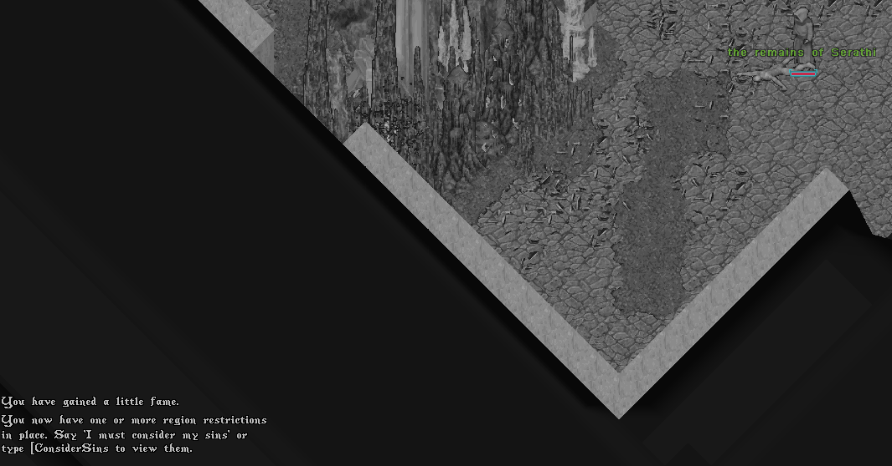
- 红手盗贼的区域限制处理方式与杀人犯区域限制相同，可在犯罪摘要 Criminal Summary 菜单的「区域限制 Region Restrictions」区查看，玩家可通过说「I must consider my sins」或输入 [ConsiderSins 来打开。
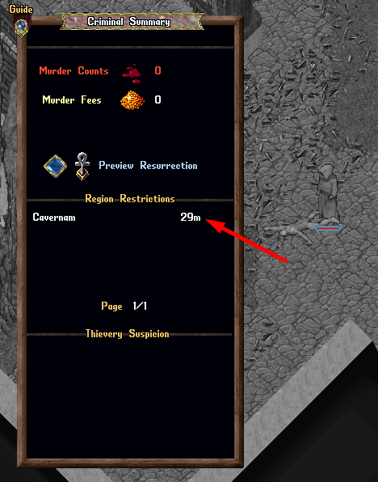
抢劫与扒窃 Mugging and Pilfering
- 从普通生物扒窃或抢劫可偷取的金币上限现为 2000（原为 1000）。
- 从boss 类生物扒窃或抢劫可偷取的金币上限现为 5000（原为 2500）。
- 玩家现在在扒窃或抢劫生物时可遇到盗贼公会色（色号 1067） 物品。
黑货与黑市 Black Goods and Black Market
- 黑货现在只能兑换为金币（不再获得任何物品，包括盗贼公会色物品）。
- 大幅提升了各稀有度黑货的基础金币价值 baseline。
- 提升了黑货出现在更高稀有度的几率。
- 调整黑货兑换率的每周稀缺值 Weekly Scarcity 现在每周在基础值的 66% 至 133% 之间随机。
- 兑换黑货获得的金币现在始终存入玩家的银行箱（不再有存入背包的选项）。
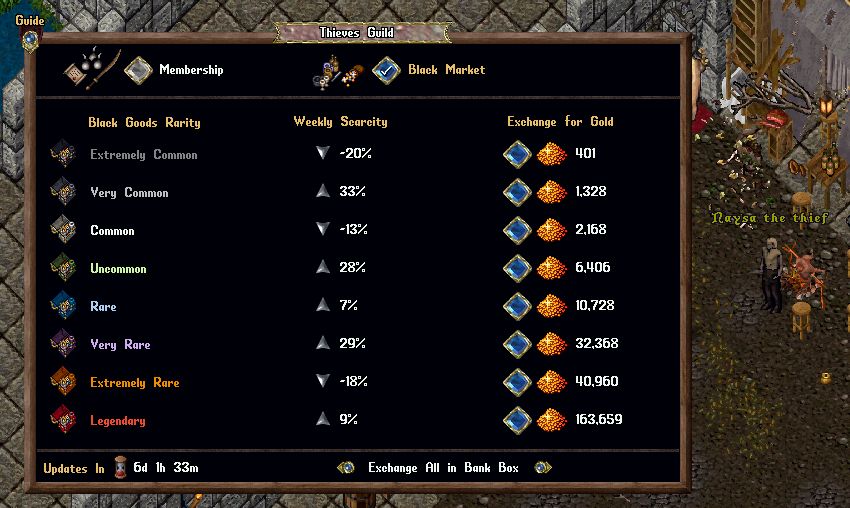
黑货各稀有度基础金币价值现如下：
- 极普通 Extremely Common： 500 金币（原 100）
- 很普通 Very Common： 1000 金币（原 250）
- 普通 Common： 2500 金币（原 500）
- 不普通 Uncommon： 5000 金币（原 1000）
- 稀有 Rare： 10,000 金币（原 2500）
- 很稀有 Very Rare： 25,000 金币（原 5,000）
- 极稀有 Extremely Rare： 50,000 金币（原 10,000）
- 传说级稀有 Legendary Rare： 150,000 金币（原 25,000）
十七、地牢金币衰减 Dungeon Gold Decay
- 地牢内地面或可移动容器中的金币，现在每 60 秒减少 10%。
- 生物尸体（NPC）上的金币，在尸体变为可自由拾取（死亡 5 分钟后）时减少 50%，之后每 60 秒再减少 10%。
十八、制图术 Cartography
- 玩家不再需要使用探险者包 Explorer Packs 来激活制图术 PvM 加成：这些加成现在对玩家始终生效（在通常适用的场合）。
- 探险者包现在仅用于与藏宝图 Treasure Maps 和资源图 Resource Maps 相关的机制。
- 探险者包现在可堆叠。
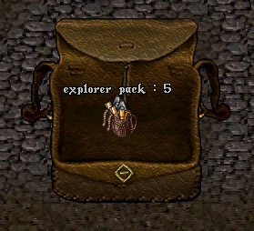
- 探险者包现在有一个制作选项，可一次性制作 25 个探险者包。
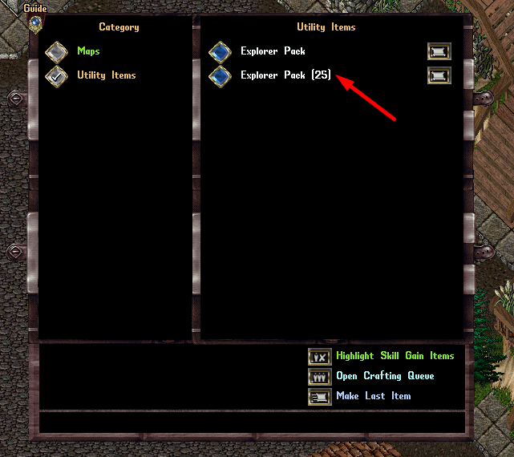
PvM 加成
- 玩家对由藏宝图宝箱或贸易商队生成的生物，或在船上时对生物，其造成伤害提升 (25% × (有效制图术 / 100))。
- 注意：此改动使现有制图术加成变为乘法伤害加成，适用于所列情形下玩家直接造成的所有伤害（但不含随从或船炮伤害）。
地图集与徒步 Atlases and Hiking
- 玩家不再需要安全营火（露营）或使用探险者包（制图）即可使用地图集的徒步至地点 Hike to Location 功能。
- 玩家仍须满足徒步所启用技能（露营 / 制图）的技能要求才能使用该功能。
任务/追踪箭头 Quest/Tracking Arrows
- 玩家现在可同时有多个「任务/追踪」箭头显示在屏幕上，每个类别可有一个箭头，如：追踪技能 Tracking Skill、地图集地点 Atlas Location、贸易/阵营商队 Trade/Faction Caravan、阵营地点 Faction Location、藏宝/资源图 Treasure/Resource Map 等。
- 每个类别的追踪箭头有各自独特的颜色（如追踪技能目标为绿色）。
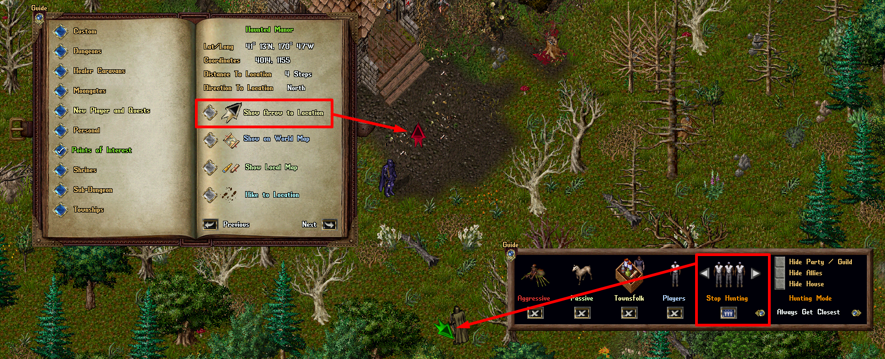
- 若玩家将鼠标悬停在追踪箭头上，会看到悬停文字指示箭头代表什么（如追踪技能的一个狩猎目标）。
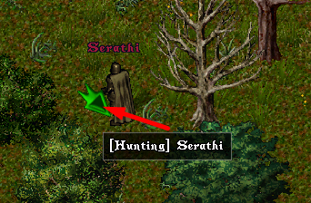
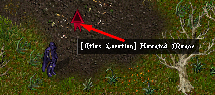
十九、整理之书 Organizer Tomes
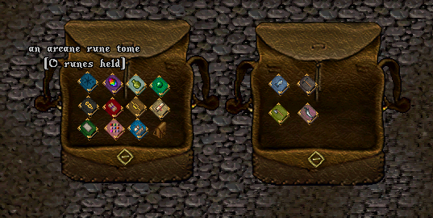
- 整理之书现在可用符文与典籍染料 Rune and Tome Dyes（原名符文书染料 Runebook Dyes）染色。
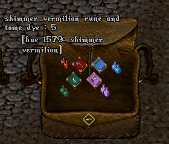
- 符文书染料现更名为「符文与典籍染料」。
- 符文与典籍染料现在可用于以下物品：
- 奥术符文书 Arcane Rune Tome
- 元素符文书 Aspect Rune Tome
- 染料书 Dyes Tome
- 知识页书 Lore Page Tome
- 精通链链接书 Mastery Chain Link Tome
- 外域收藏卡书 Outlands Collectable Card Tome
- 稀有布书 Rare Cloth Tome
- 船只升级书 Ship Upgrade Tome
- 技能精通书 Skill Mastery Tome
- 法术卷轴书 Spell Scroll Tome
- 藏宝图书 Treasure Map Tome
- 钓鱼图书 Fishing Map Tome
- 伐木图书 Lumber Map Tome
- 矿石图书 Ore Map Tome
- 剥皮图书 Skinning Map Tome
- 召回符 Recall Rune
- 注意：玩家仍可使用饰品染料 Accessory Dyes 为召回符染色。
二十、藏宝图 overhaul 改版 Treasure Map Overhaul
未解码地图 Undecoded Maps
- 未解码藏宝图现在可与同等级的其他未解码藏宝图堆叠。
- 补丁上线时，任何已解码、但尚未生成藏宝图宝箱的藏宝图，将回退为未解码。
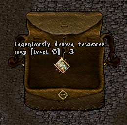
藏宝图书 Treasure Map Tomes
- 藏宝图书现在只存储未解码藏宝图。
- 补丁上线时，藏宝图书内任何已解码的藏宝图将回退为未解码。
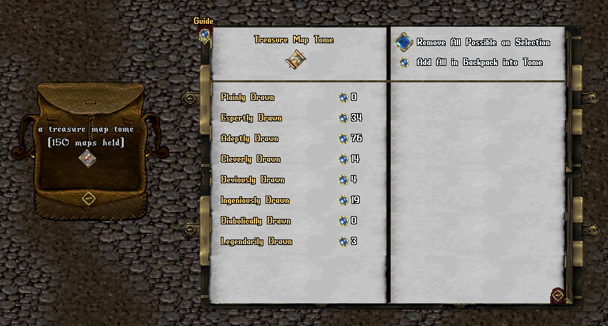
- 玩家不再使用铲子 Shovels 来挖取背包中的藏宝图。
- 藏宝图现在通过藏宝图菜单管理，在背包中双击藏宝图时显示。
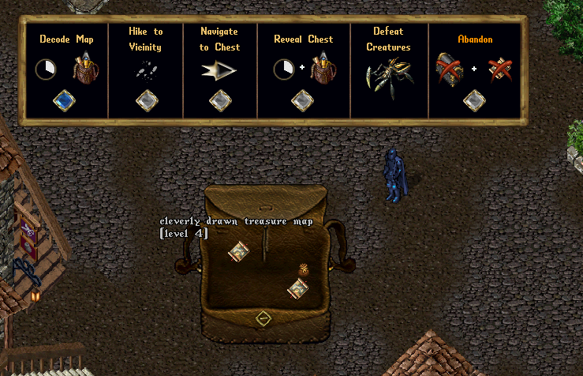
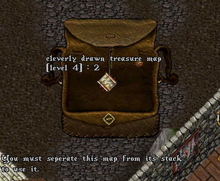
制图技能与藏宝图操作 Cartography Skill and Treasure Map Actions
- 藏宝图宝箱不再需要使用开锁 Lockpicking 技能，也不再从采矿 Mining 技能获得定位宝箱的益处。
- 藏宝图现在有多个玩家可执行的「操作」，其中数项需要玩家具备足够的已学制图技能 printed Cartography skill 才能完成（解码地图 Decode Map 与揭示宝箱 Reveal Chest）。
- 玩家不再需要铲子来完成藏宝图，而是须在成功完成某些藏宝图操作（解码地图与揭示宝箱）时消耗背包中的探险者包。
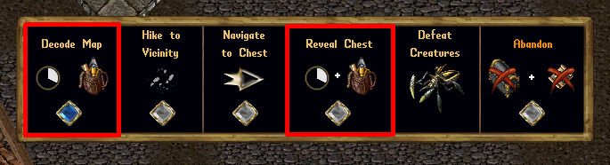
藏宝图宝箱各等级最低制图技能要求
- 粗略绘制（1 级 Plainly Drawn）： 制图 85
- 熟练绘制（2 级 Expertly Drawn）： 制图 90
- ** adept 绘制（3 级 Adeptly Drawn）：** 制图 95
- 巧妙绘制（4 级 Cleverly Drawn）： 制图 100
- 诡诈绘制（5 级 Deviously Drawn）： 制图 105
- 精巧绘制（6 级 Ingeniously Drawn）： 制图 110
- 恶魔绘制（7 级 Diabolically Drawn）： 制图 115
- 传说绘制（8 级 / 传说图 Lore Map）： 制图 120
解码地图 Decode Map
- 要开始藏宝图，玩家须解码它。
- 玩家可点击藏宝图菜单中的「解码地图」按钮来解码。
- 解码藏宝图需要玩家静止 15 秒，且完成时须能从背包消耗 1 个探险者包。
- 若玩家在完前移动，操作将取消。
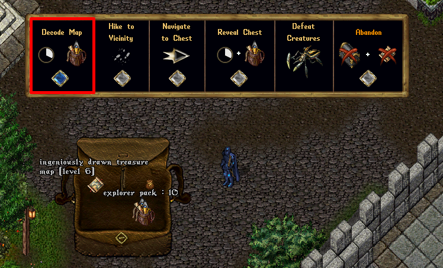
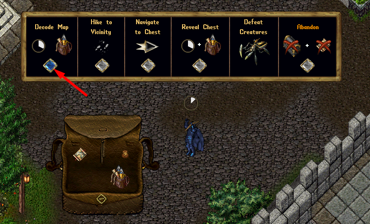
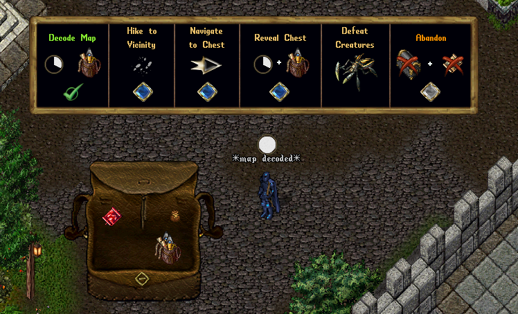
激活地图物品 Active Map Item
- 一旦玩家解码藏宝图，它成为其「激活地图物品」（跨其 OutlandsID 即所有角色与账号）。
- 激活地图物品变为红色 Red Hue，变为祝福 Blessed，并绑定到解码它的角色。
- 玩家同时只能有 1 个激活地图物品，包括任何藏宝图或资源图（钓鱼/伐木/矿石/剥皮）。
- 玩家不能使用绑定到其 OutlandsID 上其他角色的藏宝图。
- 玩家必须完成其激活地图物品，或放弃它，才能对其他地图物品进行解码或操作。
- 单击激活藏宝图会显示其过期剩余时间，以及当前绑定到谁。
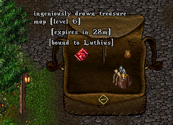
藏宝图过期 Treasure Map Expiration
- 一旦藏宝图激活，若 1–7 级地图 30 分钟内、8 级（传说图）60 分钟内未完成，将自动过期并变为放弃 Abandoned。
- 当藏宝图被放弃/过期时，它将与藏宝图宝箱及任何生成的生物一起删除。
徒步至附近 Hike to Vicinity
- 玩家不再能看见藏宝图宝箱位置的视觉预览（地图弹出）。
- 玩家现在须通过点击「徒步至附近」按钮，徒步前往藏宝图宝箱位置附近。
- 使用徒步至附近旅行时，适用于地图集徒步的所有正常限制均生效。
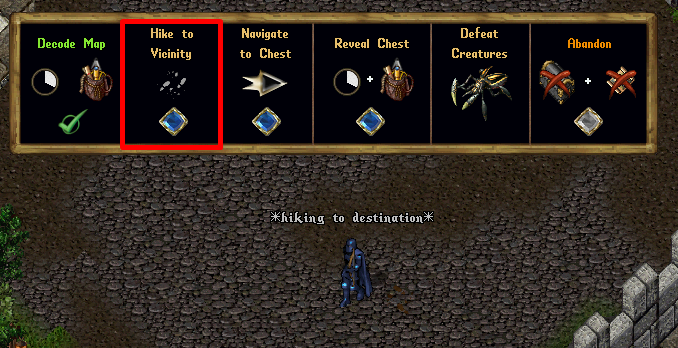
导航至宝箱 Navigate to Chest
- 点击「导航至宝箱」按钮会显示一个指向藏宝图宝箱位置的追踪箭头。
- 与正常追踪箭头不同，这不会显示目标坐标，也不显示到目的地的距离。
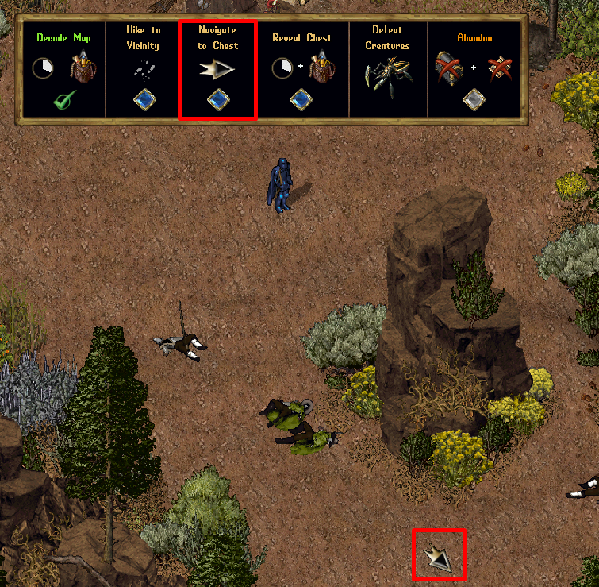
揭示宝箱 Reveal Chest
- 玩家可点击藏宝图菜单中的「揭示宝箱」按钮尝试揭示其地图的藏宝图宝箱。
- 尝试揭示需要玩家静止 15 秒，且完成时须能从背包消耗 1 个探险者包。
- 若完前移动，操作将取消。
- 玩家须位于藏宝图宝箱位置3 格内才能成功揭示。
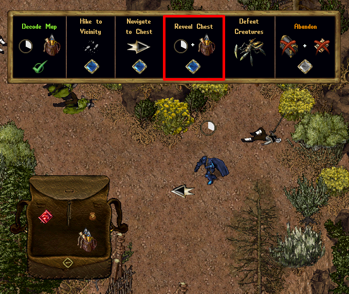
击败生物 Defeat Creatures
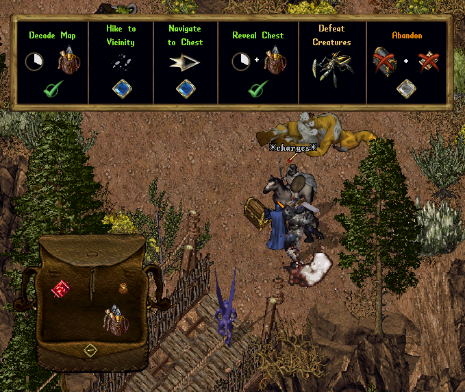
- 一旦所有生成生物被击败，藏宝图所有者会收到头顶通知。
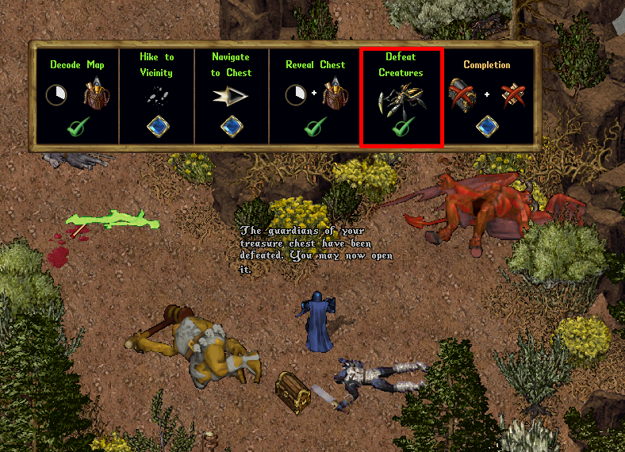
宝箱访问、战利品与奖励 Treasure Chest Access, Loot, and Rewards
- 一旦所有生成生物被击败，宝箱现在可双击打开，这将生成战利品并改变宝箱的外观。
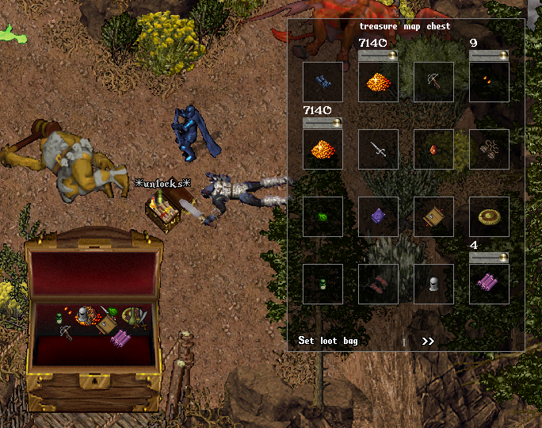
独占期 Exclusivity Period
- 击败藏宝图宝箱的生成生物后 2 分钟内，只有藏宝图所有者能打开宝箱。
- 在此期间任何其他玩家尝试打开宝箱会收到系统消息，告知剩余可开启时间。
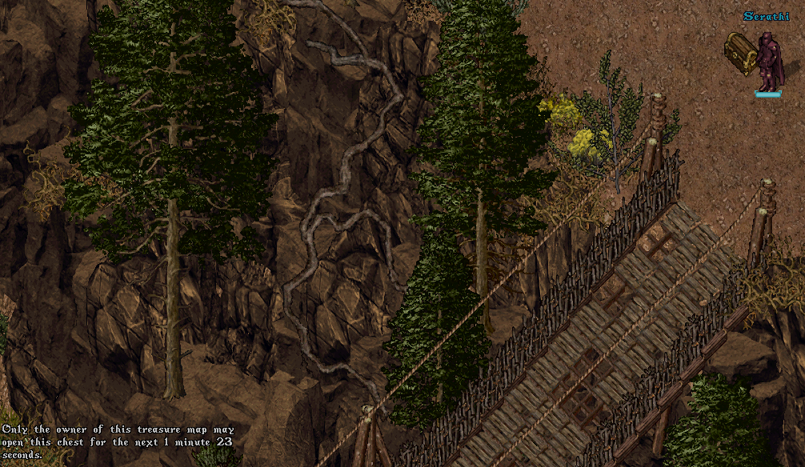
打开宝箱 Opening Treasure Chest
- 首位打开宝箱的玩家会因此获得经验，并以其加成来决定宝箱战利品的任何调整（如来自元素、精通链、公会恩惠等）。
- 若藏宝图所有者在宝箱打开时存活且在宝箱 18 格内，他将记入成就 Achievements、公会任务 Society Jobs、服务器排名 Server Rank。
其他玩家 Other Players
- 一旦宝箱被打开，则所有玩家都可访问宝箱。
- 然而，对于不在藏宝图所有者同一公会、队伍或联盟的玩家，打开宝箱仍是犯罪行为 criminal。
放弃 Abandon
- 玩家可通过点击藏宝图菜单中的「放弃」按钮（需三次点击确认）来选择放弃其激活藏宝图。
- 这将删除藏宝图、藏宝图宝箱及宝箱生成的任何生物。
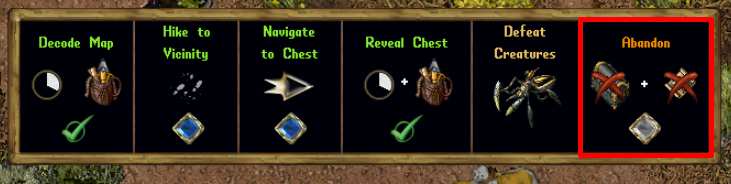
完成 Complete
- 一旦玩家击败生成生物并拾取了藏宝图宝箱，可点击「完成 Completion」按钮来删除藏宝图与宝箱（需双击确认）。
- 玩家的激活藏宝图必须被放弃/过期或完成，才能对其他藏宝图进行操作。
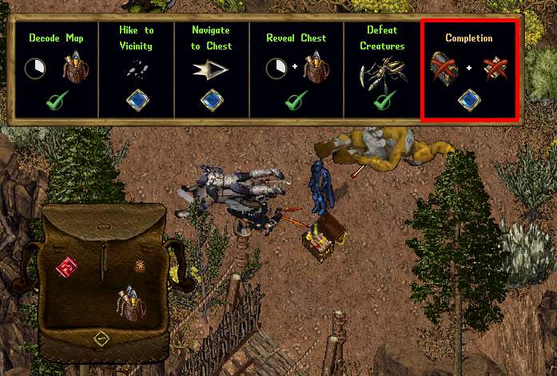
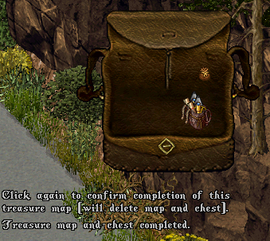
玩家将其藏宝图标为「已完成」并被删除。
玩家商店 Player Vendors
- 玩家只能在玩家商店 Player Vendors 上上架未解码藏宝图出售。
客户端 / Razor
- 玩家不能使用客户端/Razor 向藏宝图菜单发送脚本化的菜单/Gump 响应（以防潜在自动化）。
二十一、资源图 Resource Maps
改版 Overhaul
- 资源图（包括钓鱼图、伐木图、矿石图、剥皮图）现已改版，并具备与藏宝图类似的交互处理。
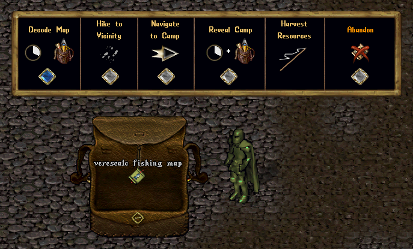
图形与色相 Graphics and Hues
- 钓鱼图、伐木图、矿石图、剥皮图现在有新的图形，并会采用各自资源的色相。
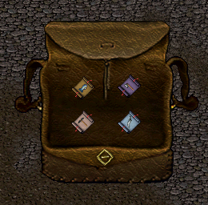
未解码地图 Undecoded Maps
- 未解码资源图现在可与同类型、同等级的其他未解码资源图堆叠（除非是补丁前、部分采集的地图，其具有非彩色色相）。
- 补丁上线时，任何已解码的资源图将回退为未解码。
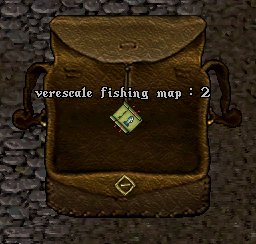
现有部分采集地图 Existing Partially Harvested Maps
补丁上线时，任何已部分采集的资源图将发生以下情况：
- 回退为未解码
- 具有非彩色色相（而非新资源色相），以表明其为部分采集
- 不可堆叠
- 不能加入资源书
- 不能上架玩家商店出售
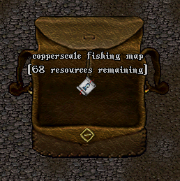
新资源图 New Resource Maps
- 补丁上线后，所有新生成的资源图现在其可采集的总资源量默认值为固定值，而非随机量（旧默认值会在该值的 −50% 至 +50% 间随机）。
地图资源总量如下：
- 暗铜 / 暗木 / 暗皮 / 暗鳞： 180 资源
- 影铁 / 影木 / 影皮 / 影鳞： 165 资源
- 红铜木 / 红铜 / 红铜皮 / 红铜鳞： 150 资源
- 青铜 / 青铜木 / 青铜皮 / 青铜鳞： 135 资源
- 金 / 金木 / 金皮 / 金鳞： 120 资源
- 银长石 / 玫瑰木 / 玫瑰皮 / 玫瑰鳞： 105 资源
- 维瑞 / 维木 / 维皮 / 维鳞： 90 资源
- 瓦洛里 / 瓦木 / 瓦皮 / 瓦鳞： 75 资源
- 阿瓦里 / 阿瓦木 / 阿瓦皮 / 阿瓦鳞： 60 资源
钓鱼图 Fishing Maps
- 钓鱼图不再有「剩余抛竿次数 Casts Remaining」，现在功能类似伐木/矿石/剥皮图：当总剩余资源归零时完成。
- 玩家在每次钓鱼图采集操作时总会获得资源（在木板、矿石或皮革间随机），且玩家不会「失败」采集尝试。
- 水族箱鱼 Aquarium Fish 现在作为额外战利品出现，而非取代获得资源。
- 玩家在钓鱼图采集操作中不再获得基础鱼 Basic Fish 或特殊鱼 Special Fish。
- 资源图现在通过资源图菜单管理，在背包中双击资源图时显示。
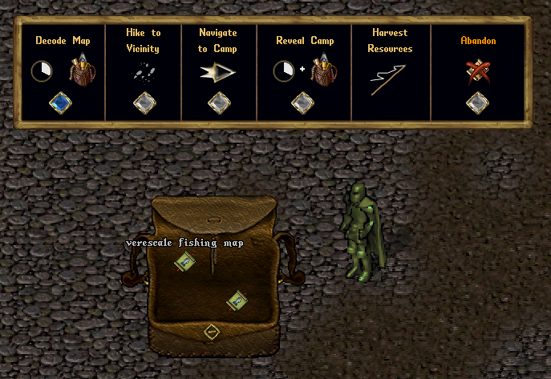
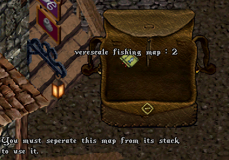
技能要求与地图操作 Skill Requirements and Map Actions
- 资源图不再从采矿技能获得定位营地位置 Camp Locations 的益处。
- 资源图现在有多个玩家可执行的「操作」，其中数项需要玩家具备足够的有效采集技能（含来自元素/链接等的采集技能加成）才能完成（解码地图与揭示营地）。
- 玩家须在成功完成某些地图操作（解码地图与揭示营地）时消耗背包中的探险者包。
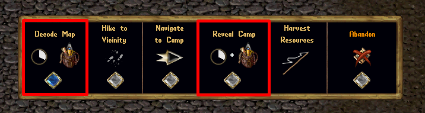
各地图类型最低有效采集技能要求
钓鱼图 Fishing Map
- 暗鳞 Dullscale：钓鱼 65
- 影鳞 Shadowscale：钓鱼 70
- 红铜鳞 Copperscale：钓鱼 75
- 青铜鳞 Bronzescale：钓鱼 80
- 金鳞 Goldenscale：钓鱼 85
- 玫瑰鳞 Rosescale：钓鱼 90
- 维鳞 Verescale：钓鱼 95
- 瓦鳞 Valescale：钓鱼 99
- 阿瓦鳞 Avarscale：钓鱼 110
伐木图 Lumber Map
- 暗木 Dullwood：伐木 65
- 影木 Shadowwood：伐木 70
- 红铜木 Copperwood：伐木 75
- 青铜木 Bronzewood：伐木 80
- 金木 Goldenwood：伐木 85
- 玫瑰木 Rosewood：伐木 90
- 维木 Verewood：伐木 95
- 瓦木 Valewood：伐木 99
- 阿瓦木 Avarwood：伐木 110
矿石图 Ore Map
- 暗铜 Dull Copper：采矿 65
- 影铁 Shadow Iron：采矿 70
- 红铜 Copper：采矿 75
- 青铜 Bronze：采矿 80
- 金 Gold：采矿 85
- 银长石 Agapite：采矿 90
- 维瑞 Verite：采矿 95
- 瓦洛里 Valorite：采矿 99
- 阿瓦里 Avarite：采矿 110
剥皮图 Skinning Map
- 暗皮 Dullhide：法医鉴定 Forensic Eval 65
- 影皮 Shadowhide：法医鉴定 70
- 红铜皮 Copperhide：法医鉴定 75
- 青铜皮 Bronzehide：法医鉴定 80
- 金皮 Goldenhide：法医鉴定 85
- 玫瑰皮 Rosehide：法医鉴定 90
- 维皮 Verehide：法医鉴定 95
- 瓦皮 Valehide：法医鉴定 99
- 阿瓦皮 Avarhide：法医鉴定 110
解码地图 Decode Map
- 要开始资源图，玩家须解码它；点击资源图菜单中的「解码地图」按钮。
- 解码需要玩家静止 15 秒，完成时须能从背包消耗 1 个探险者包。
- 若完前移动，操作取消。
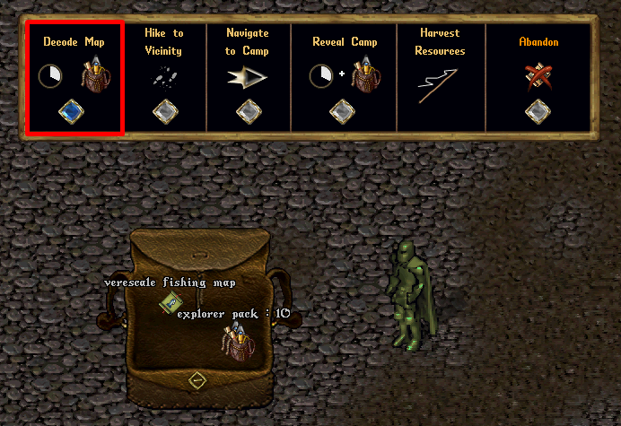
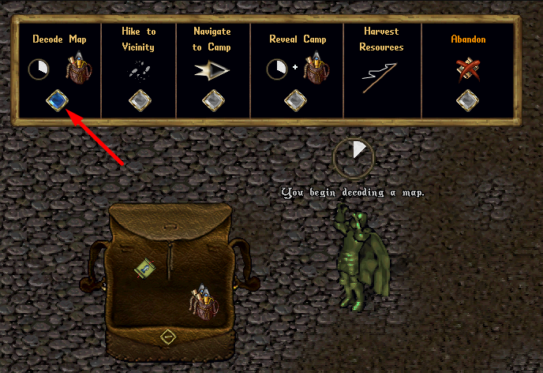
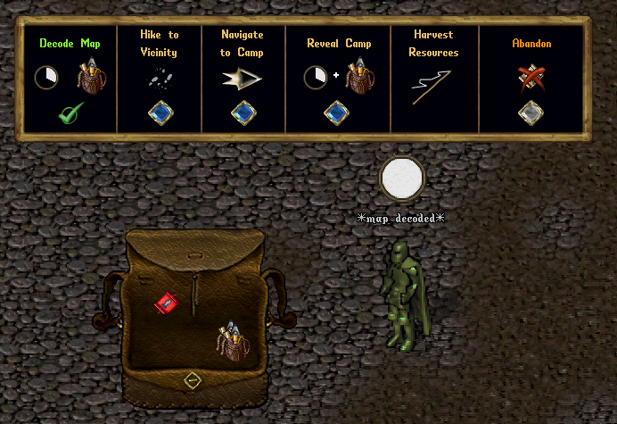
激活地图物品 Active Map Item
- 一旦玩家解码资源图，它成为其「激活地图物品」（跨 OutlandsID）。变为红色、祝福，并绑定到解码角色。
- 同时只能有 1 个激活地图物品（含藏宝图与资源图）。不能用于绑定到其它角色的图。
- 必须完成或放弃它，才能操作其他地图。
- 单击激活资源图会显示过期剩余时间与绑定角色。
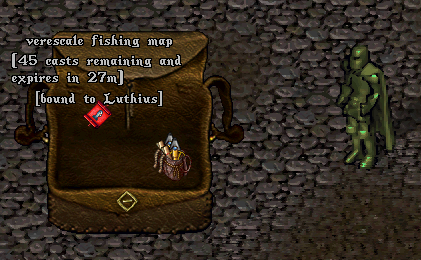
地图过期 Map Expiration
- 一旦资源图激活，若 30 分钟内未完成，将自动过期并变为放弃（连同其资源营地，若已创建）。
徒步至附近 Hike to Vicinity
- 玩家不再能看见资源图位置的视觉预览。
- 须通过点击「徒步至附近」按钮徒步前往资源图营地位置附近；适用地图集徒步的所有正常限制。
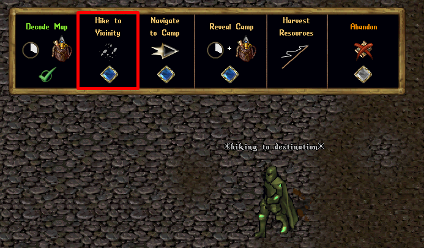
导航至营地 Navigate to Camp
- 点击「导航至营地」按钮会显示指向地图资源营地位置的追踪箭头；不显示坐标与距离。
揭示营地 Reveal Camp
- 点击资源图菜单中的「揭示营地」按钮尝试揭示；需静止 15 秒并消耗 1 个探险者包；须在营地位置 3 格内才能成功。
采集资源 Harvest Resources
- 揭示营地位置后，玩家可用正常采集操作（双击适当装备的采集工具与「智能采集 Smart Harvesting」）采集资源。
- 须在资源营地 3 格内才能采集。
- 资源营地所有采集操作现在耗时 2 秒（含钓鱼）。
放弃 Abandon
- 点击资源图菜单中的「放弃」按钮（需三次点击确认）放弃激活资源图；将删除资源图及其营地（若已揭示）。
- 玩家不能再「拆除 Demolish」生成的资源营地，须用放弃机制提前结束。
完成 Completion
- 一旦玩家采集完所有资源（或钓鱼图抛完所有次数），资源图将自动完成并删除，其资源营地消失。
- 玩家的激活地图物品（藏宝或资源图）必须放弃/过期或完成，才能操作其他地图。
资源图书 Resource Map Tomes
- 资源图书现在只存储未解码资源图。
- 补丁上线时，资源图书内任何已解码资源图将回退为未解码。
- 补丁上线时，所有已解码但部分采集的存储资源图，将合并其剩余资源并（取整）调整所存未解码地图数量。
客户端 / Razor
- 玩家不能使用客户端/Razor 向资源图菜单发送脚本化响应（防自动化）。
二十二、分发箱 Distribution Chests
- 分发箱现在对藏宝图与资源图（钓鱼/伐木/矿石/剥皮）有拆分/分割 Split/Divide 选项。
二十三、Boss
Boss 类基础生命值 Base Hit Points for Boss-Types
- 海洋小 Boss Ocean Mini-Boss： 200,000（原 100,000）
- 海洋 Boss Ocean Boss： 400,000（原 200,000）
- 传说 Boss Lore Boss： 200,000（原 75,000）
- 小 Boss Mini-Boss： 200,000（原 100,000）
- Boss： 400,000（原 200,000）
- 神龛 Boss Shrine Boss： 600,000（原 250,000）
- 全能 Boss Omni Boss： 1,500,000（无变化）
Boss 类声望奖励 Prestige Rewards for Boss-Types
- 传说 Boss： 2（原 4）
- 小 Boss： 5（原 6）
- Boss： 10（原 12）
- 神龛 Boss： 12（无变化）
- 全能 Boss： 50（原 60）
二十四、深坑试炼 Pit Trials
深坑试炼记录 Pit Trial Records
- 现有深坑试炼记录将被清除（因即将到来的规则变更）。
花费与每周次数 Costs and Weekly Attempts
- 开启深坑试炼现在花费：1 人 6 生存装备 Survival Gear、3 人 12、5 人 18。
- 玩家现在每周（按 OutlandsID）最多可参与（开启/加入）7 次深坑试炼。
- 每周次数限制将在每周五晚（与公会任务重置同时）重置。
- 玩家可在任何考古台 Archeology Desk 的深坑试炼菜单底部查看剩余周次数。
- 玩家进入深坑试炼时会收到头顶消息，显示当周剩余次数。
测试服 Test Shard
每波伤害加成 Damage Bonus Per Wave
- 1 人： 每波 3.0%（原 2.5%）
- 3 人： 每波 6.0%（原 5.0%）
- 5 人： 每波 9.0%（原 7.5%）
每波伤害减免加成 Damage Resistance Bonus Per Wave
- 1 人： 每波 0.75%（原 0.5%）
- 3 人： 每波 1.5%（原 1.0%）
- 5 人： 每波 2.25%（原 1.5%）
每波总生物难度 Total Creature Difficulty Per Wave
- 1 人： 每波 +150 总难度（原 125）
- 3 人： 每波 +300 总难度（原 250）
- 5 人： 每波 +450 总难度（原 375）
每波仇恨范围增加 Aggro Range Increase Per Wave
- 生物不再随波次等级增加仇恨范围，现在为固定的 20 格感知范围 20 tile Perception Range。
后备生物 Backup Creatures
- 为极高波次（超出常规可用生物范围）的「后备」生物池添加了数个地下墓穴 4 Ossuary 4 生物。
大量服务器代码更新以提升性能并减少潜在卡顿与游戏冻结源，对以下处理做了大量结构性改动：
- 制作队列 Crafting Queues
- 特殊能力效果 SpecialAbilityEffects 的处理（如流血、疾病、穿透等）
Boss 战绩 [BossResults]
- [BossResults 现在只保留最近 48 小时的记录（因数据存储量过大）。
血仇 Blood Feuds
角色创建 Character Creation
- 在角色创建的「自定义技能选择 Custom Skill Selection」界面选择双持 Dual Wielding 或投掷 Throwing 时，现在会正确地给玩家对应技能的武器。
（译文完）